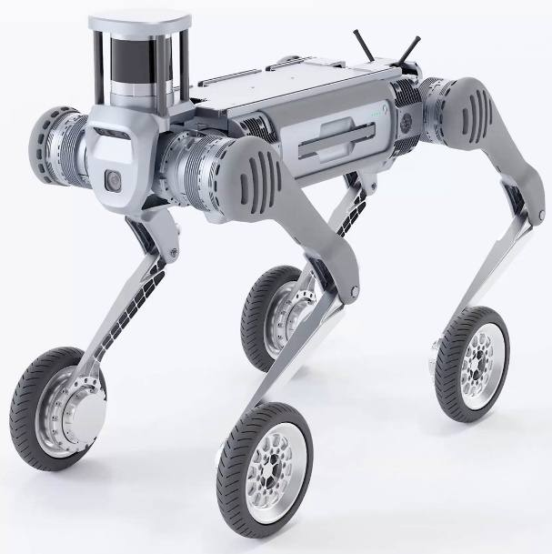
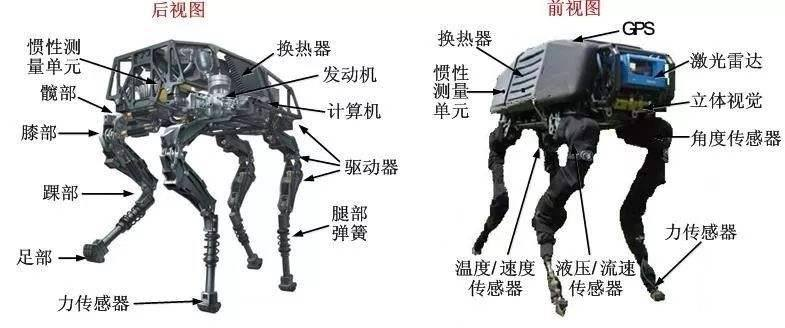
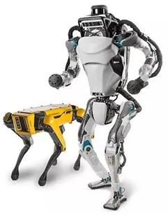
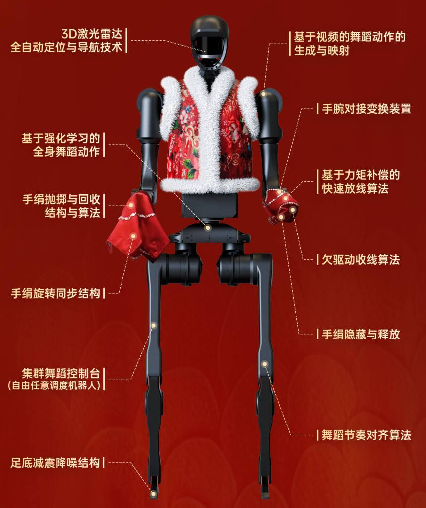
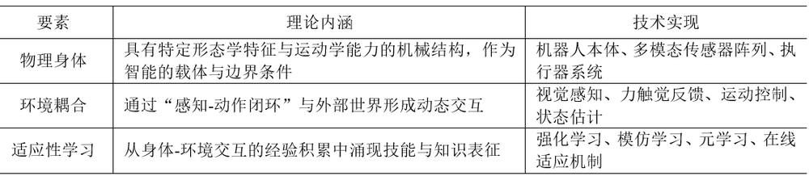
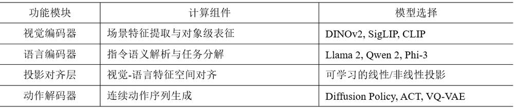
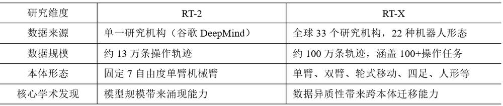
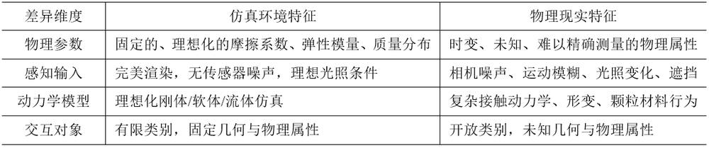

第 1 页 · 数智人才培养

数智人才培养
AI通识精品系列
周苏 教授 QQ：81505050
人工智能通识教程

第 2 页 · 第10章
第10章
周苏 教授 QQ：81505050
机器人技术与具身智能


第 3 页 · 机器人是一种能够半自主或全自主工作的智能机器，具有感知、决策、执行等基本特征。机器人能够通过编程和自动控制来

机器人是一种能够半自主或全自主工作的智能机器，具有感知、决策、执行等基本特征。机器人能够通过编程和自动控制来
执行诸如作业或移动等任务，可以辅助甚至替代
人类完成危险、繁重、复杂的工作，提高工作效
率与质量，服务人类生活，扩大或延伸人的活动
及能力范围。
图10-1 中国杭州的宇树B2工业四足机器人
第10章 机器人技术与具身智能
第 4 页 · 如今，机器人学早就超出了科学幻想的领域，并在工业自动化、医疗、太空探索等领域发挥着重要作用。软件机器人模拟器不但简化了机
如今，机器人学早就超出了科学幻想的领域，并在工业自动化、医疗、太空探索等领域发挥着重要作用。软件机器人模拟器不但简化了机器人工程师的开发工作，还为研究人工智能算法和机器学习提供了工具。
第10章 机器人技术与具身智能
第 5 页 · 01

01
包容
体系结构
02
机器感知
03
机器人
的概念
04
机器人与
AIGC的结合
目录 / CONTENTS
05
机器人的
技术问题
06
具身智能与
大动作模型
第 6 页 · PART 01
PART 01
包容体系结构
第 7 页 · 在传统的计算机编程中，程序员必须尽力考虑所有可能遇到的情况并一一规定应对策略。无论创建何种规模的程序，一半以上的工作（软
在传统的计算机编程中，程序员必须尽力考虑所有可能遇到的情况并一一规定应对策略。无论创建何种规模的程序，一半以上的工作（软件测试）都在于找到那些处理错误的案例，并修改代码来纠正它们。
10.1 包容体系结构
第 8 页 · 几十年来，人们发明了许多工具来使编程更加有效并降低错误发生的概率。与1946年计算机刚问世时相比，编程无疑更加高效，但仍
几十年来，人们发明了许多工具来使编程更加有效并降低错误发生的概率。与1946年计算机刚问世时相比，编程无疑更加高效，但仍避免不了大量错误的存在。不论使用何种工具，程序员在编写程序时每百行间还是会产生数量大致相同的错误。这些错误不仅出现在程序本身及所使用的数据中，更存在于任务的具体规定中。倘若利用逻辑、规则和框架编写通用的人工智能程序，那么程序必定十分庞大，并且漏洞百出。
10.1 包容体系结构
第 9 页 · 1986年，约翰·希尔勒进行了一项名为“中文房间”的思维实验，来证明能够操控符号的计算机即使模拟得再真实，也根本无法理解
1986年，约翰·希尔勒进行了一项名为“中文房间”的思维实验，来证明能够操控符号的计算机即使模拟得再真实，也根本无法理解它所处的这个现实世界。
10.1.1 所谓“中文房间”
第 10 页 · 一位只懂英语的人在一个房间中，这个房间除了门上有一个小窗口之外，全部都是封闭的。他随身带着一本关于中文翻译的书。房间里还
一位只懂英语的人在一个房间中，这个房间除了门上有一个小窗口之外，全部都是封闭的。他随身带着一本关于中文翻译的书。房间里还有足够的稿纸、铅笔和橱柜。写着中文的纸片通过小窗口送入房间中，房间中的人可以用他的书来翻译这些文字并用中文回复，他的回
答可能是完全正确的。这样，房间里的人可
以让任何房间外的人以为他会说流利的中文
……
10.1.1 所谓“中文房间”
第 11 页 · 被测试者代表计算机，他所经历的也正是计算机的工作内容，即遵循规则，操控符号。所以，就算计算机技术无比先进，已经能用语言自
被测试者代表计算机，他所经历的也正是计算机的工作内容，即遵循规则，操控符号。所以，就算计算机技术无比先进，已经能用语言自然与人交流，但它仍然无法真正懂得语言本身。。
中文房间实验验证的假设就是看起来完全智能的计算机程序其实根本不理解自身所处理的各种信息。这个实验否定了“图灵测试”的可靠性，并且还说明了人工智能所能达到的极限，包括机器学习和潜在的人工智能的可能性。从本质上说，计算机永远只是被限定在操作字符上，AI 最多也只能做到不懂装懂。
10.1.1 所谓“中文房间”
第 12 页 · 通常，一个机器人由3个部分组成：
通常，一个机器人由3个部分组成：
（1）一个传感器集合；
（2）一个定义机器人的行为的程序；
（3）一个传动器和受动器集合。
10.1.2 传统机器人学
第 13 页 · 在传统的机器人学中，机器人拥有一个中央“大脑”，负责构建并维护环境“地图”，然后根据地图制定计划。首先，机器人的传感器（
在传统的机器人学中，机器人拥有一个中央“大脑”，负责构建并维护环境“地图”，然后根据地图制定计划。首先，机器人的传感器（如接触、光线和超声波等传感器）从环境中获得信息。机器人的大脑将传感器收集的信息组合起来并更新它的环境地图。然后，机器人决定运动的路线，它通过传动器和受动器执行动作。传动器由一些发动机组成，它们连接到受动器，受动器包括轮子和机械臂等，与机器人的环境交互。传动器这个词也常常用来泛指传动器或受动器。
10.1.2 传统机器人学
第 14 页 · 简单地说，传统机器人接收来自传感器（可能有多个传感器）的输入，组合传感器信息，更新环境地图，根据它当前掌握的环境视图制定
简单地说，传统机器人接收来自传感器（可能有多个传感器）的输入，组合传感器信息，更新环境地图，根据它当前掌握的环境视图制定计划，最后执行动作。但是，这种方法是有问题的。问题之一是它需要进行大量计算。另外，因为外部环境总是在变化，所以很难让环境地图符合最新情况。一些生物（比如昆虫）不掌握外部世界的地图，甚至没有记忆，但是它们却活得非常自在；模仿它们会不会更好呢？这些问题引出了一种新型的机器人学，称为基于行为的机器人学（BBR），它在当今的机器人实验室中占主要地位。
10.1.2 传统机器人学
第 15 页 · 可以使用包容体系结构来实现BBR。希尔勒认为，“中文房间”实验证明了能够操控符号的程序不具备自主意识。自该论断发布以来，
可以使用包容体系结构来实现BBR。希尔勒认为，“中文房间”实验证明了能够操控符号的程序不具备自主意识。自该论断发布以来，众说纷纭，各方抨击和辩护的声音不断。不过，它确实减缓了纯粹基于逻辑的人工智能研究，转而倾向于支持建立摆脱符号操控的系统。其中一个极端尝试就是包容体系结构，强调完全避免符号的使用，不是用庞大的框架数据库来模拟世界，而是关注直接感受世界。
10.1.3 建立包容体系结构
第 16 页 · 1986年，麻省理工学院人工智能实验室的领导者罗德尼·布鲁克斯在文章“大象不下棋”中提出了包容体系结构：基于行为的机器人
1986年，麻省理工学院人工智能实验室的领导者罗德尼·布鲁克斯在文章“大象不下棋”中提出了包容体系结构：基于行为的机器人依赖于一组独立的简单的行为。行为的定义包括触发它们的条件（如一个传感器读数）和采取的动作（涉及一个受动器）。一个行为建立在其他行为之上。当两个行为发生冲突时，一个中央仲裁器决定哪个行为应该优先。机器人的总体行为是突然的，但BBR的效果好于其部分之和，较高层行为包容较低层行为。
10.1.3 建立包容体系结构
第 17 页 · 包容体系结构不是一个只关注隐藏在数据中心中的文本的程序，而是实实在在的物理机器人，它利用不同设备（传感器）来感知世界，并
包容体系结构不是一个只关注隐藏在数据中心中的文本的程序，而是实实在在的物理机器人，它利用不同设备（传感器）来感知世界，并通过其他设备（传动器）来操控行动。罗德尼·布鲁克斯曾说道：“这个世界就是描述它自己最好的模型，它总是最新的，它总是包括了需要研究的所有细节。诀窍在于正确地、足够频繁地感知它。”这就是情境或具身人工智能，也被许多人看做至关重要的一项创造，因为它能够建立抛弃庞大数据库的智能系统，而事实已经证明建立庞大数据库是非常困难的。
10.1.3 建立包容体系结构
第 18 页 · 包容体系结构建立在多层独立行为模块的基础上。每个行为模块都是一个简单程序，从传感器那里接收信息，再将指令传递给传动器。层
包容体系结构建立在多层独立行为模块的基础上。每个行为模块都是一个简单程序，从传感器那里接收信息，再将指令传递给传动器。层级更高的行为可以阻止低层行为的运作。
情境或具身人工智能这两个术语的概念稍有不同。情境人工智能是实实在在放置于真实环境中的，具身人工智能则拥有物理实体。前者暗示其本身必须与非理性环境进行交互，后者则是利用非理想的传感器和传动器完成交互。当然，在实际操作中，二者不可分割。
10.1.3 建立包容体系结构
第 19 页 · 包容体系结构令人信服地解释了低等动物的行为，例如，蟑螂等昆虫和蜗牛等无脊椎动物。利用该结构创建的机器人编程是固定的。如果
包容体系结构令人信服地解释了低等动物的行为，例如，蟑螂等昆虫和蜗牛等无脊椎动物。利用该结构创建的机器人编程是固定的。如果想要完成其他任务，则需要再建立一个新的机器人。这与人脑运作的方式不同，随着年龄的增长和阅历的增加，我们的大脑同样也在成长和改变，但并不是所有的动物都有像人脑一样复杂的大脑。
10.1.4 包容体系结构的实现
第 20 页 · 对许多机器人来说，这种程度的智能刚好合适。比如，智能真空吸尘器只需要以最有效的方式覆盖整个地板面积，而不会在运行过程中被
对许多机器人来说，这种程度的智能刚好合适。比如，智能真空吸尘器只需要以最有效的方式覆盖整个地板面积，而不会在运行过程中被可能出现的障碍物干扰。在更加智能的机器人的最底层系统中，包容体系结构同样适用，即用来执行反射。有物体接近眼睛时我们会眨眼，触碰到扎手的东西时我们会快速把手收回来，这两种行为发生得太快，根本无法涉及意识思考。
10.1.4 包容体系结构的实现
第 21 页 · 事实上，条件反射不一定关乎大脑。医生轻敲膝盖，观察小腿前踢反应，这时信号仅从膝盖上传至脊柱再重新传回肌肉，尤其对于机器人
事实上，条件反射不一定关乎大脑。医生轻敲膝盖，观察小腿前踢反应，这时信号仅从膝盖上传至脊柱再重新传回肌肉，尤其对于机器人而言，如果运行太多软件，思考时间就会相对较长。编写条件反射程序可以帮助我们创建兼顾环境和智能的机器人。
这为今后继续发展提供了一种新的途径，因为包容体系结构已经成功再现了昆虫、条件反射等行为，但它还未曾展示出更高水平的逻辑推理能力，无法处理语言或高水平学习等问题。无疑，它是一块重要的拼图，但还不能解开所有的谜题。
10.1.4 包容体系结构的实现
第 22 页 · 利用包容体系结构技术创建的第一个机器人名叫艾伦，它具备三层行为模块。最底层模块通过声纳探测物体位置并远离物体来避开障碍物
利用包容体系结构技术创建的第一个机器人名叫艾伦，它具备三层行为模块。最底层模块通过声纳探测物体位置并远离物体来避开障碍物。在孤身一人时，它将保持静止，一旦有物体靠近就立刻跑开。物体靠得越近，闪避的推动力越大。中间一层对行为做出了修改，机器人每十秒会朝一个随机方向移动。最高层则利用声呐找寻远离机器人所处位置的点，并调整路径朝该点前进。作为一个实验，艾伦成功展示了包容结构技术。但就机器人本身来说，从一个地方到另一个地方漫无目的的移动确实没有什么成就可言。
10.1.4 包容体系结构的实现
第 23 页 · 赫伯特机器人是利用包容体系结构创建的第三个机器人，它拥有24个八位微处理器，能够运行40个独立行为。赫伯特在麻省理工学院
赫伯特机器人是利用包容体系结构创建的第三个机器人，它拥有24个八位微处理器，能够运行40个独立行为。赫伯特在麻省理工学院人工智能实验室中漫步，寻找空饮料罐，再将它们统一带回，理论上供回收利用。实验室的学生会将空罐子丢在地上，罐子的大小形状全部统一，并且都是竖直放置，这些条件都让目的易拉罐变得更容易被识别和收集。
10.1.4 包容体系结构的实现
第 24 页 · 赫伯特没有存储器，无法设计在实验室中行走的路径。除此之外，它的所有行为都不曾与任何人沟通，全靠从传感器接收输入信息再控制
赫伯特没有存储器，无法设计在实验室中行走的路径。除此之外，它的所有行为都不曾与任何人沟通，全靠从传感器接收输入信息再控制传动器作为输出。例如，当它的手臂伸展出去时，手指会置于易拉罐的两侧，随即握紧。但这并不是软件控制的结果，而是因为手指之间的红外光束被切断了。与之类似，由于已经抓住了罐子，手臂就将收回。
10.1.4 包容体系结构的实现
第 25 页 · 与严格执行规则和计划的机器人相比，赫伯特能够更加灵活地采取应对措施。例如，它正在过道上向下滚动，有人递给它一个空罐子，它
与严格执行规则和计划的机器人相比，赫伯特能够更加灵活地采取应对措施。例如，它正在过道上向下滚动，有人递给它一个空罐子，它也会立刻抓住罐子送往回收基地，但这一举动并不会打扰它的搜寻过程，它合上手掌是因为已经抓住了罐子，它的下一步行动就是直接回到基地雨不是继续盲目搜索。
虽然不具备存储器的机器人似乎无法进行多项有用的任务，但研究人员开发了解决这类局限的方法。
10.1.4 包容体系结构的实现
第 26 页 · 托托机器人能够在真实环境中漫步并制作地图，其绘制的地图不是数据结构模式而是一组地标。地标在被发现后会产生相应行为，托托通
托托机器人能够在真实环境中漫步并制作地图，其绘制的地图不是数据结构模式而是一组地标。地标在被发现后会产生相应行为，托托通过激活与某地相关的行为回到该地。这一行为不断重复，持续发送信息激活最接近的其他行为。随着激活的持续进行，与机器人当前位置相关的行为迟早会被激活。最早开启激活的信息将经过次数最少的地标行为到达目的地，由此选择最优路径。机器人朝着激活信号来源的地标方向移动，在到达目的地后又接收到新的激活信号，再继续朝着新信号指示方向前进。最终，它经由地标间的最短路径到达指定位置。
10.1.4 包容体系结构的实现
第 27 页 · 机器人判定地标的方式与人类不同，人类可能会将某些办公室房门、盆栽植物或是大型打印机认做地标，而计算机则是根据自身行为进行
机器人判定地标的方式与人类不同，人类可能会将某些办公室房门、盆栽植物或是大型打印机认做地标，而计算机则是根据自身行为进行判断，是否紧邻走廊、是否靠墙这些都会成为计算机的考虑因素。托托机器人只能探索一小块区域并且根据指令回到特定位置，而更加复杂的机器人则能够将地标与活动及事件联系起来，并在某些情况下主动回到特定位置。太阳能机器人可以确定光线充足的区域，并在电量低时回到该区域。收集易拉罐的机器人则可以记住学生们最容易丢罐子的地方。
10.1.4 包容体系结构的实现
第 28 页 · PART 02
PART 02
机器感知
第 29 页 · 机器感知是指能够使用传感器输入的资料（如照相机、麦克风、声纳以及其他的特殊传感器）来推断世界的状态。计算机视觉能够分析影
机器感知是指能够使用传感器输入的资料（如照相机、麦克风、声纳以及其他的特殊传感器）来推断世界的状态。计算机视觉能够分析影像输入，另外还有语音识别、人脸辨识和物体辨识。
10.2 机器感知
第 30 页 · 机器感知是一连串复杂程序所组成的大规模信息处理系统，信息通常由很多常规传感器采集，经过这些程序的处理后，会得到一些非基本
机器感知是一连串复杂程序所组成的大规模信息处理系统，信息通常由很多常规传感器采集，经过这些程序的处理后，会得到一些非基本感官能得到的结果。机器感知研究如何用机器或计算机模拟、延伸和扩展人的感知或认知能力，包括机器视觉、机器听觉、机器触觉……例如如：计算机视觉、模式（文字、图像、声音等）识别、自然语言理解等，都是人工智能领域的重要研究内容，也是在机器感知或机器认知方面高智能水平的计算机应用。
10.2 机器感知
第 31 页 · 正确运用机器感知技术，研发智能交通数据采集系统，科学系统的分析、改造现有的交通管理体系，对缓解城市交通难题有极大帮助。利
正确运用机器感知技术，研发智能交通数据采集系统，科学系统的分析、改造现有的交通管理体系，对缓解城市交通难题有极大帮助。利用逼真的三维数字模型展示人口密集的商业区、重要文物古迹旅游点等，以不同的观测视角，为安全设施的位置部署，提早预防和对突发事件的及时处理等情况，为维系社会公共安全提供保障。
10.2 机器感知
第 32 页 · （1）机器智能：研究如何提高机器应用的智能水平，把机器用得更聪明。这里，“机器”主要指计算机、自动化装置、通信设备等。人
（1）机器智能：研究如何提高机器应用的智能水平，把机器用得更聪明。这里，“机器”主要指计算机、自动化装置、通信设备等。人工智能专家系统，就是用计算机去模拟、延伸和扩展专家的智能，基于专家的知识和经验，可以求解专业性问题的、具有人工智能的计算机应用系统。如：医疗诊断专家系统，故障诊断专家系统等。
（2）机器思维，具体地说是计算机思维，如专家系统、机器学习、计算机下棋、计算机作曲、计算机绘画、计算机辅助设计、计算机证明定理、计算机自动编程等。
10.2 机器感知
第 33 页 · 感知机器或认知机器，研制具有人工感知或人工认知能力的机器。包括：视觉机器、听觉机器、触觉机器……如：文字识别机、感知机、
感知机器或认知机器，研制具有人工感知或人工认知能力的机器。包括：视觉机器、听觉机器、触觉机器……如：文字识别机、感知机、认知机、工程感觉装置、智能仪表等。
10.2 机器感知
第 34 页 · （3）机器行为：研究如何用机器（计算机）去模拟、延伸、扩展人的智能行为，如：自然语言生成用计算机等模拟人说话的行为；机器
（3）机器行为：研究如何用机器（计算机）去模拟、延伸、扩展人的智能行为，如：自然语言生成用计算机等模拟人说话的行为；机器人行动规划模拟人的动作行为；倒立摆智能控制模拟杂技演员的平衡控制行为；机器人的协调控制模拟人的运动协调控制行为；工业窑炉的智能模糊控制模拟窑炉工人的生产控制操作行为；轧钢机的神经网络控制模拟操作工人对轧钢机的控制行为……
10.2 机器感知
第 35 页 · PART 03
PART 03
机器人的概念
第 36 页 · 机器人是“自动执行工作的机器装置”，是高级整合控制论、机械电子、计算机、材料和仿生学的产物，在工业、医学、农业、建筑业甚
机器人是“自动执行工作的机器装置”，是高级整合控制论、机械电子、计算机、材料和仿生学的产物，在工业、医学、农业、建筑业甚至军事等领域中均有重要用途。它既可以接受人类指挥，又可以运行预先编排的程序，也可以根据以人工智能技术制定的原则纲领行动。机器人的任务是协助或取代人类工作的工作，例如生产业、建筑业或是危险的工作。
10.3 机器人的概念
第 37 页 · 随着工业自动化和计算机技术的发展，机器人开始进入大量生产和实际应用阶段。尔后由于自动装备海洋开发空间探索等实际问题的需要
随着工业自动化和计算机技术的发展，机器人开始进入大量生产和实际应用阶段。尔后由于自动装备海洋开发空间探索等实际问题的需要，对机器人的智能水平提出了更高的要求。特别是危险环境，人们难以胜任的场合更迫切需要机器人，从而推动了智能机器人的研究。
10.3 机器人的概念
第 38 页 · 随着机器人技术的飞速发展，机器人所涵盖的内容越来越丰富。从应用环境出发，可以将机器人分为两大类，即制造环境下的工业机器人
随着机器人技术的飞速发展，机器人所涵盖的内容越来越丰富。从应用环境出发，可以将机器人分为两大类，即制造环境下的工业机器人和非制造环境下的服务与仿人型机器人（特种机器人）。所谓工业机器人就是面向工业领域的多关节机械手或多自由度机器人，而特种机器人则是除工业机器人之外的、用于非制造业并服务于人类的各种先进机器人。
10.3.1 机器人“三原则”
第 39 页 · 一般来说，人们可以接受这种说法，即机器人是靠自身动力和控制能力来实现各种功能的一种机器。联合国标准化组织采纳了美国机器人
一般来说，人们可以接受这种说法，即机器人是靠自身动力和控制能力来实现各种功能的一种机器。联合国标准化组织采纳了美国机器人协会给机器人下的定义：“一种可编程和多功能的操作机；或是为了执行不同的任务而具有可用电脑改变和可编程动作的专门系统。”
中国科学家对机器人的定义是：“机器人是一种自动化的机器，这种机器具备一些与人或生物相似的智能能力，如感知能力、规划能力、动作能力和协同能力，是一种具有高度灵活性的自动化机器。”
10.3.1 机器人“三原则”
第 40 页 · 在研究和开发未知及不确定环境下作业的机器人的过程中，人们逐步认识到机器人技术的本质是感知、决策、行动和交互技术的结合。有
在研究和开发未知及不确定环境下作业的机器人的过程中，人们逐步认识到机器人技术的本质是感知、决策、行动和交互技术的结合。有一些技术可在人工智能研究中用来建立世界状态的模型和描述世界状态变化的过程。关于机器人动作规划生成和规划监督执行等问题的研究，推动了规划方法的发展。
10.3.1 机器人“三原则”
第 41 页 · 此外，由于机器人是一个综合性的课题，除机械手和步行机构外，还要研究机器视觉、触觉、听觉等信感技术以及机器人语言和智能控制
此外，由于机器人是一个综合性的课题，除机械手和步行机构外，还要研究机器视觉、触觉、听觉等信感技术以及机器人语言和智能控制软件等，这是一个涉及精密机械信息传感技术、人工智能方法、智能控制以及生物工程等学科的综合技术，这一研究有利于促进各学科的相互结合，并大大推动人工智能技术的发展。
10.3.1 机器人“三原则”
第 42 页 · 为了防止机器人伤害人类，1942年，科幻小说家艾萨克·阿西莫夫在小说《钢洞》中提出了“机器人三原则”：
为了防止机器人伤害人类，1942年，科幻小说家艾萨克·阿西莫夫在小说《钢洞》中提出了“机器人三原则”：
（1）机器人不得伤害人类，不得看到人类受到伤害而袖手旁观。
（2）机器人必须服从人类给予的命令，除非这种命令与第一原则相冲突。
（3）只要与第一或第二原则没有冲突，机器人就必须保护自己的生存。
这是给机器人赋予的伦理性纲领。几十年过去了，机器人学术界一直将这三条原则作为机器人开发的准则。
10.3.1 机器人“三原则”
第 43 页 · 机器人是一种能够自动执行任务的机械装置，通常由计算机程序控制。它们可以是完全自主的，也可以是在人类监督下操作。
机器人是一种能够自动执行任务的机械装置，通常由计算机程序控制。它们可以是完全自主的，也可以是在人类监督下操作。
机器人通常分为以下类别。
（1）工业机器人：用于制造业中的重复性任务，如焊接、装配和包装。
（2）服务机器人：为个人或企业提供服务，如家庭清洁机器人、导览机器人。
· 医疗机器人：用于手术辅助、康复训练等医疗场景。
· 特种机器人：用于极端环境下的作业，如深海探测、太空探索等。
10.3.2 机器人的分类
第 44 页 · （3）协作机器人：就是人们可以与机器人在生产线上协同工作，充分发挥机器人的效率及人类的智能。这种机器人不仅性价比高，而且
（3）协作机器人：就是人们可以与机器人在生产线上协同工作，充分发挥机器人的效率及人类的智能。这种机器人不仅性价比高，而且安全方便，能够极大地促进制造企业的发展。协作型机器人扫除了人机协作的障碍，让机器人彻底摆脱护栏或围笼的束缚，其开创性的产品性能和广泛的应用领域，为工业机器人的发展开启了新时代。
10.3.2 机器人的分类
第 45 页 · 在许多情况下，有必要区分智能机器人和非智能机器人，这种区分有助于明确不同类型的机器人的功能、应用场景和技术要求。
在许多情况下，有必要区分智能机器人和非智能机器人，这种区分有助于明确不同类型的机器人的功能、应用场景和技术要求。
10.3.3 智能与非智能机器人
第 46 页 · 区分智能机器人与非智能机器人的几个重要原因如下。
区分智能机器人与非智能机器人的几个重要原因如下。
（1）技术复杂度。智能机器人通常包含先进的传感器、复杂的控制系统以及强大的计算能力，能够执行自主决策和学习任务。它们可能利用人工智能技术如机器学习、深度学习等来处理信息并做出响应；而非智能机器人往往依赖于预编程的指令集进行操作，其行为是固定的，不具备自我学习或适应新环境的能力。这类机器人通常用于重复性高且环境变化小的任务。
10.3.3 智能与非智能机器人
第 47 页 · （2）应用范围。智能机器人适用于需要高度灵活性和适应性的场景，例如服务机器人（如家庭助手）、医疗机器人（如手术辅助）、无
（2）应用范围。智能机器人适用于需要高度灵活性和适应性的场景，例如服务机器人（如家庭助手）、医疗机器人（如手术辅助）、无人驾驶车辆等。这些领域要求机器人能够根据实际情况调整自身的行为模式；而非智能机器人：主要用于特定任务的自动化，如工业生产线上的机械臂、自动导引车（AGV）等。这些任务特点是流程固定，环境可控，对智能化程度的要求较低。
10.3.3 智能与非智能机器人
第 48 页 · （3）成本与维护。由于采用了更先进的技术和组件，智能机器人开发和部署成本较高。同时，软件更新和系统维护也更加复杂，但长期
（3）成本与维护。由于采用了更先进的技术和组件，智能机器人开发和部署成本较高。同时，软件更新和系统维护也更加复杂，但长期来看，智能机器人可以通过学习提高效率，减少人为干预；而非智能机器人相对而言设计和制造成本较低，维护也较为简单，适合大规模部署于单一任务环境中。
10.3.3 智能与非智能机器人
第 49 页 · （4）用户期望与体验。用户期待智能机器人具备更高的互动性和个性化服务能力，这要求机器人不仅能完成基本任务，还能理解用户的
（4）用户期望与体验。用户期待智能机器人具备更高的互动性和个性化服务能力，这要求机器人不仅能完成基本任务，还能理解用户的意图，提供定制化服务；而非智能机器人：主要关注的是任务执行的准确性和稳定性，用户体验更多集中在功能实现而非交互体验上。
（5）法律与伦理考量。随着智能水平的提升，智能机器人涉及隐私保护、数据安全等问题变得更为突出。此外，当智能机器人造成损害时，责任界定变得更加复杂；而非智能机器人由于其行为完全由预设程序控制，责任界定相对简单明了，更多集中在设备本身可靠性和安全性上。
10.3.3 智能与非智能机器人
第 50 页 · PART 04
PART 04
机器人与AIGC的结合
第 51 页 · 如今，AIGC与机器人的结合为多个领域带来了创新的可能性。这种结合不仅增强了机器人的功能，还拓宽了它们的应用范围。机器人
如今，AIGC与机器人的结合为多个领域带来了创新的可能性。这种结合不仅增强了机器人的功能，还拓宽了它们的应用范围。机器人与AIGC结合的关键方面在于利用生成式人工智能增强机器人的交互能力、个性化服务和内容创造，使其能够更自然地与人类沟通并提供定制化的解决方案。
10.4 机器人与AIGC的结合
第 52 页 · （1）增强交互能力。
（1）增强交互能力。
• 自然语言处理（NLP）：通过集成先进的NLP模型，机器人能够理解和生成更加自然流畅的语言，从而提高人机交互的体验。例如，服务机器人可以更准确地理解用户的请求，并以更人性化的方式回应。
• 情感识别与生成：除了文字内容，AIGC还可以帮助机器人识别和表达情感，使得互动更加贴近人类的情感交流。
10.4 机器人与AIGC的结合
第 53 页 · （2）个性化服务。
（2）个性化服务。
• 用户画像构建：利用AIGC技术分析用户的行为数据，建立详细的用户画像，从而提供个性化的服务。例如，智能家居助手可以根据家庭成员的不同喜好调整环境设置或推荐内容。
• 定制化内容生成：根据用户的偏好自动生成新闻摘要、音乐播放列表等个性化内容，提升用户体验。
10.4 机器人与AIGC的结合
第 54 页 · （3）自动化内容创作。
（3）自动化内容创作。
• 自动报告生成：在工业监控、医疗健康等领域，机器人可以通过传感器收集数据，并使用AIGC技术自动生成详细的报告或分析结果，减少人工干预。
• 教育与培训材料生成：教育机器人可以依据学习者的进度和需求，自动生成适合的教学内容或练习题。
10.4 机器人与AIGC的结合
第 55 页 · 尽管AIGC与机器人的结合带来了许多可能性，但也面临着一些挑战，例如：
尽管AIGC与机器人的结合带来了许多可能性，但也面临着一些挑战，例如：
（1）隐私保护：随着机器人收集的数据越来越多，如何确保用户隐私不被侵犯成为一个重要议题。
（2）内容质量控制：虽然AIGC能快速生成大量内容，但保证这些内容的质量和准确性仍然是一个挑战。
（3）伦理问题：需要考虑AI生成的内容是否符合社会价值观，避免产生负面影响。
10.4 机器人与AIGC的结合
第 56 页 · PART 05
PART 05
机器人的技术问题
第 57 页 · 开发机器人涉及的技术问题极其纷杂，在某种程度上，这取决于人们实现精致复杂的机器人功能的雄心。从本质上讲，机器人方面的工作
开发机器人涉及的技术问题极其纷杂，在某种程度上，这取决于人们实现精致复杂的机器人功能的雄心。从本质上讲，机器人方面的工作是问题求解的综合形式。
机器人的早期历史着重于运动和视觉（称为机器视觉）。计算几何和规划问题是与其紧密结合的学科。在过去几十年中，随着如语言学、神经网络和模糊逻辑等领域成为机器人技术的研究与进步的一个不可分割的部分，机器人学习的可能性变得更加现实。
10.5 机器人的技术问题
第 58 页 · 在1967年日本召开的第一届机器人学术会议上，人们就提出了两个有代表性的定义。一是森政弘与合田周平提出的：“机器人是一种
在1967年日本召开的第一届机器人学术会议上，人们就提出了两个有代表性的定义。一是森政弘与合田周平提出的：“机器人是一种具有移动性、个体性、智能性、通用性、半机械半人性、自动性、奴隶性等7个特征的柔性机器”。从这一定义出发，森政弘又提出了用自动性、智能性、个体性、半机械半人性、作业性、通用性、信息性、柔性、有限性、移动性等10个特性来表示机器人的形象。
10.5.1 机器人的组成
第 59 页 · 另一方面，加藤一郎提出具有如下3个条件的机器称为机器人：
另一方面，加藤一郎提出具有如下3个条件的机器称为机器人：
（1）具有脑、手、脚等三要素的个体；
（2）具有非接触传感器（用眼、耳接受远方信息）和接触传感器；
（3）具有平衡觉和固有觉的传感器。
10.5.1 机器人的组成
第 60 页 · 可以说机器人就是具有生物功能的实际空间运行工具，可以代替人类完成一些危险或难以进行的劳作、任务等。机器人能力的评价标准包
可以说机器人就是具有生物功能的实际空间运行工具，可以代替人类完成一些危险或难以进行的劳作、任务等。机器人能力的评价标准包括：智能，指感觉和感知，包括记忆、运算、比较、鉴别、判断、决策、学习和逻辑推理等；机能，指变通性、通用性或空间占有性等；物理能，指力、速度、可靠性、联用性和寿命等。
10.5.1 机器人的组成
第 61 页 · 机器人一般由执行机构、驱动装置、检测装置和控制系统、复杂机械等组成。
机器人一般由执行机构、驱动装置、检测装置和控制系统、复杂机械等组成。
图10-4 机器人的结构
10.5.1 机器人的组成

第 62 页 · （1）执行机构。即机器人本体，其臂部一般采用空间开链连杆机构，其中的运动副（转动副或移动副）常称为关节，关节个数通常即为
（1）执行机构。即机器人本体，其臂部一般采用空间开链连杆机构，其中的运动副（转动副或移动副）常称为关节，关节个数通常即为机器人的自由度数。根据关节配置型式和运动坐标形式的不同，机器人执行机构可分为直角坐标式、圆柱坐标式、极坐标式和关节坐标式等类型。出于拟人化的考虑，常将机器人本体的有关部位分别称为基座、腰部、臂部、腕部、手部（夹持器或末端执行器）和行走部（对于移动机器人）等。
10.5.1 机器人的组成
第 63 页 · （2）驱动装置。是驱使执行机构运动的机构，按照控制系统发出的指令信号，借助于动力元件使机器人进行动作。它输入的是电信号，
（2）驱动装置。是驱使执行机构运动的机构，按照控制系统发出的指令信号，借助于动力元件使机器人进行动作。它输入的是电信号，输出的是线、角位移量。机器人使用的驱动装置主要是电力驱动装置，如步进电机、伺服电机等，此外也有采用液压、气动等驱动装置。
10.5.1 机器人的组成
第 64 页 · （3）检测装置。是实时检测机器人的运动及工作情况，根据需要反馈给控制系统，与设定信息进行比较后，对执行机构进行调整，以保
（3）检测装置。是实时检测机器人的运动及工作情况，根据需要反馈给控制系统，与设定信息进行比较后，对执行机构进行调整，以保证机器人的动作符合预定的要求。作为检测装置的传感器大致可以分为两类：
· 一类是内部信息传感器，用于检测机器人各部分的内部状况，如各关节的位置、速度、加速度等，并将所测得的信息作为反馈信号送至控制器，形成闭环控制。
10.5.1 机器人的组成
第 65 页 · · 另一类是外部信息传感器，用于获取有关机器人的作业对象及外界环境等方面的信息，以使机器人的动作能适应外界情况的变化，使
· 另一类是外部信息传感器，用于获取有关机器人的作业对象及外界环境等方面的信息，以使机器人的动作能适应外界情况的变化，使之达到更高层次的自动化，甚至使机器人具有某种“感觉”，向智能化发展，例如视觉、声觉等外部传感器给出工作对象、工作环境的有关信息，利用这些信息构成一个大的反馈回路，从而将大大提高机器人的工作精度。
10.5.1 机器人的组成
第 66 页 · （4）控制系统。一种是集中式控制，即机器人的全部控制由一台微型计算机完成。另一种是分散（级）式控制，即采用多台微机来分担
（4）控制系统。一种是集中式控制，即机器人的全部控制由一台微型计算机完成。另一种是分散（级）式控制，即采用多台微机来分担机器人的控制，如当采用上、下两级微机共同完成机器人的控制时，主机常用于负责系统的管理、通讯、运动学和动力学计算，并向下级微机发送指令信息；作为下级从机，各关节分别对应一个CPU，进行插补运算和伺服控制处理，实现给定的运动，并向主机反馈信息。根据作业任务要求的不同，机器人的控制方式又可分为点位控制、连续轨迹控制和力（力矩）控制。
10.5.1 机器人的组成
第 67 页 · 值得注意的是，机器人电力供应与人类之间存在一些重要的类比。人类需要食物和水来为身体运动和大脑功能提供能量。目前，机器人的
值得注意的是，机器人电力供应与人类之间存在一些重要的类比。人类需要食物和水来为身体运动和大脑功能提供能量。目前，机器人的大脑并不发达，因此需要动力（通常由电池提供）进行运动和操作。现在思考，当“电源”快没电了（即当我们饿了或需要休息时）会发生什么。我们不能做出好的决定，犯错误，表现得很差或很奇怪。机器人也会发生同样的事情。因此，它们的供电必须是独立的，受保护和有效的，并且应该可以平稳降级。也就是说，机器人应该能够自主地补充自己的电源，而不会完全崩溃。
10.5.1 机器人的组成
第 68 页 · 末端执行器使机器人身上的任何设备可以对环境做出反应。在机器人世界中，它们可能是手臂、腿或轮子，即可以对环境产生影响的任何
末端执行器使机器人身上的任何设备可以对环境做出反应。在机器人世界中，它们可能是手臂、腿或轮子，即可以对环境产生影响的任何机器人组件。驱动器是一种机械装置，允许末端执行器执行其任务。驱动器可以包括电动机、液压或气动缸以及温度敏感或化学敏感的材料。这样的执行器可以用于激活轮子、手臂、夹子、腿和其他效应器。驱动器可以是无源的，也可以是有源的。
10.5.1 机器人的组成
第 69 页 · 虽然所有执行器都需要能量，但是有些可能是无源的需要直接的动力来操作，而其他可能是无源的使用物理运动规律来保存能量。最常见
虽然所有执行器都需要能量，但是有些可能是无源的需要直接的动力来操作，而其他可能是无源的使用物理运动规律来保存能量。最常见的执行器是电动机，但也可以是使用流体压力的液压、使用空气压力的气动、光反应性材料（对光做出响应）、化学反应性材料、热反应性材料或压电材料（通常为晶体，按下或弹起时产生电荷的材料。
10.5.1 机器人的组成
第 70 页 · 运动学是关于机械系统运行的最基础研究。在移动机器人领域，这是一种自下而上的技术，涉及物理、力学、软件和控制领域。像这样的
运动学是关于机械系统运行的最基础研究。在移动机器人领域，这是一种自下而上的技术，涉及物理、力学、软件和控制领域。像这样的情况，这种机器人技术每时每刻都需要软件来控制硬件，因此这种系统很快就变得相当复杂。无论你是想让机器人踢足球，还是登上月球，或是在海面下工作，最根本的问题都是运动。机器人如何移动？它的功能是什么？
10.5.2 机器人的运动
第 71 页 · 典型的执行器是：
典型的执行器是：
· 轮子用于滚动。
· 腿可以走路、爬行、跑步、爬坡和跳跃。
· 手臂用于抓握、摇摆和攀爬。
· 翅膀用于飞行。
· 脚蹼用于游泳。
10.5.2 机器人的运动
第 72 页 · 在机器人领域中，一个常见的概念是物体运动度，这是表达机器人可用的各种运动类型的方法。例如，考虑直升机的运动自由度（称为平
在机器人领域中，一个常见的概念是物体运动度，这是表达机器人可用的各种运动类型的方法。例如，考虑直升机的运动自由度（称为平移自由度）。一般来说，有6个自由度（DOF）可以
描述直升机可能的原地转圈、俯仰和偏
航运动。
图10-5 一架直升机及其自由度
10.5.2 机器人的运动
第 73 页 · 原地转圈意味着从一侧转到另一侧，俯仰意味着向上或向下倾斜，偏航意味着左转或右转。像汽车（或直升机在地面上）一样的物体只有
原地转圈意味着从一侧转到另一侧，俯仰意味着向上或向下倾斜，偏航意味着左转或右转。像汽车（或直升机在地面上）一样的物体只有3个自由度（DOF）（没有垂直运动），但是只有两个自由度可控。也就是说，地面上的汽车通过车轮只能前后移动，并通过其方向盘向左或向右转。如果一辆汽车可以直接向左或向右移动（比如说使其每个车轮转动90°），那么这将增加另一个自由度。由于机器人运动更加复杂，例如手臂或腿试图在不同方向上移动（如在人类的手臂中有肌腱套），因此自由度的数量是个重要问题。
10.5.2 机器人的运动
第 74 页 · 一旦开始考虑运动，就必须考虑稳定性。对于人和机器人还有重心的概念，这是我们走路地面上方的一个点，它使我们在走路的地面上方
一旦开始考虑运动，就必须考虑稳定性。对于人和机器人还有重心的概念，这是我们走路地面上方的一个点，它使我们在走路的地面上方能够保持平衡。重心太低意味着我们在地面上拖行前进，重心太高则意味着不稳定。与这个概念紧密联系的是支持多边形的概念。这是支持机器人加强稳定性平台。人类也有这样的支持平台，只是我们通常没有意识到，它就在我们躯干中的某个位置。对于机器人，当它有更多的腿时，也就是有3条、4条或6条腿时，问题通常不大。
10.5.2 机器人的运动
第 75 页 · 1992年马克·雷伯特等人创办了波士顿动力学工
1992年马克·雷伯特等人创办了波士顿动力学工
程公司，首先开发了全球第一个能自我平衡的跳
跃机器人，之后公司获得美国国防部投资几千万
元用于机器人的研究，虽然当时美国国防部还想
不出这些机器人能干什么，但认为这个技术未来
是有用的。
10.5.3 波士顿机器人大狗

第 76 页 · 这也印证了商业模式是做出来的这样的道理。当时，很多机器人行走缓慢，平衡很差，雷伯特模仿生物学运动原理，使机器保持动态稳定
这也印证了商业模式是做出来的这样的道理。当时，很多机器人行走缓慢，平衡很差，雷伯特模仿生物学运动原理，使机器保持动态稳定。与真的动物一样，雷伯特机器人移动迅速且平稳。
2005年，波士顿动力公司的专家创造了四腿机器人大狗。这个项目是由美国国防高级研究计划局资助的，源自国防部为军队开发新技术的任务。
10.5.3 波士顿机器人大狗
第 77 页 · 三大机器人系统大狗、亚美尼亚和Cog，每个项目都代表了20世纪晚期以来，科学家数十年来的重大努力。每个项目都解决了在机器
三大机器人系统大狗、亚美尼亚和Cog，每个项目都代表了20世纪晚期以来，科学家数十年来的重大努力。每个项目都解决了在机器人技术领域出现的复杂而细致的技术问题。大狗主要关注运动和重载运输，特别用于军事领域；亚美尼亚展现了运动的各个方面，强调了人类元素，即了解人类如何移动；Cog更多的是思考，这种思考区分了人类与其他生物，被视为人类所特有的。
2012年，大狗机器人升级，可跟随主人行进20英里。
10.5.3 波士顿机器人大狗
第 78 页 · 2015年，美军开始测试这种具有高机动能力的四足仿生机器人的试验场，开始试验这款机器人与士兵协同作战的性能。“大狗”机器
2015年，美军开始测试这种具有高机动能力的四足仿生机器人的试验场，开始试验这款机器人与士兵协同作战的性能。“大狗”机器人的动力来自一部带有液压系统的汽油发动机，它的四条腿完全模仿动物的四肢设计，内部安装有特制的减震装置。机器人的长度为1米，高70厘米，重量为75千克，从外形上看，它基本上相当于一条真正的大狗。
10.5.3 波士顿机器人大狗
第 79 页 · “大狗”机器人的内部安装有一台计算机，可根据环境的变化调整行进姿态。而大量的传感器则能够保障操作人员实时地跟踪“大狗”的
“大狗”机器人的内部安装有一台计算机，可根据环境的变化调整行进姿态。而大量的传感器则能够保障操作人员实时地跟踪“大狗”的位置并监测其系统状况。这种机器人的行进速度可达到7千米/小时，能够攀越35度的斜坡。它可携带重量超过150千克的武器和其他物资。“大狗”即可以自行沿着预先设定的简单路线行进，也可以进行远程控制。
10.5.3 波士顿机器人大狗
第 80 页 · 宇树是一家专注于开发高性能四足机器人的中
宇树是一家专注于开发高性能四足机器人的中
国科技公司。这家公司以其创新的设计和先进
的技术在国际上获得了广泛的认可，尤其是在
四足机器人领域。宇树机器人的产品被广泛应
用于科研、教育以及特定的工业应用中。
图10-7 宇树人形舞蹈机器人：
为凸显机械感而去掉了其外皮壳体
10.5.4 宇树机器人

第 81 页 · 宇树机器人的主要特点如下。
宇树机器人的主要特点如下。
（1）高性能四足机器人。这些机器人模仿动物的运动方式，具有良好的地形适应性和灵活性。它们能够在复杂和不平的地形上行走、跑步甚至跳跃。
（2）先进技术集成。采用最新的传感器技术、控制算法和人工智能，使得机器人能够自主导航、避开障碍物，并与环境进行互动。
（3）模块化设计。其设计通常是模块化的，这意味着用户可以根据需要添加或移除组件，如传感器、摄像头等，以满足不同的应用场景需求。
10.5.4 宇树机器人
第 82 页 · （4）开放平台。提供开放的软件开发工具包（SDK），鼓励开发者和研究人员基于其硬件平台开发新的应用。这不仅促进了技术创新
（4）开放平台。提供开放的软件开发工具包（SDK），鼓励开发者和研究人员基于其硬件平台开发新的应用。这不仅促进了技术创新，也为教育机构提供了一个理想的实验平台。
10.5.4 宇树机器人
第 83 页 · 例如：
例如：
（1）宇树A1机器人。这是一款轻量级且高度灵活的四足机器人。它以其小巧的体积和出色的机动性著称，适合用于研究、教育和个人爱好者探索四足机器人技术。
（2）AlienGo。这是一款更大尺寸的四足机器人，设计用于更重载荷的任务，比如物流运输、巡检等工作。它的稳定性和耐用性使其成为工业应用的理想选择。
10.5.4 宇树机器人
第 84 页 · （3）B1。这是一款专为恶劣环境设计的四足机器人，具备防水防尘功能，适用于户外探险、灾难救援等场景。
（3）B1。这是一款专为恶劣环境设计的四足机器人，具备防水防尘功能，适用于户外探险、灾难救援等场景。
（4）人形机器人G1。英伟达（NVIDIA）与宇树机器人团队在一次活动中展示了一款令人惊艳的人形机器人G1，该机器人不仅能够模仿著名运动员如C罗、科比和勒布朗·詹姆斯的标志性动作，还为观众带来了精彩绝伦的舞蹈表演。这一突破性的表现吸引了广泛的关注，标志着人形机器人技术向前迈出了重要一步。
10.5.4 宇树机器人
第 85 页 · G1人形机器人基于一种名为ASAP（对齐仿真和真实物理）的新模型，这是由卡内基梅隆大学与英伟达的研究团队共同提出的一种技
G1人形机器人基于一种名为ASAP（对齐仿真和真实物理）的新模型，这是由卡内基梅隆大学与英伟达的研究团队共同提出的一种技术框架。这一模型采用强化学习，结合真实世界的数据，专注于优化机器人在动态环境下的表现和学习能力，成功有效地缩小了仿真与现实之间的差距，使得人形机器人能够流畅自如地执行高度复杂的动作。
10.5.4 宇树机器人
第 86 页 · 据悉，G1人形机器人可以完成的一些高难度动作是通过ASAP模型进行长时间训练的结果。英伟达高级研究科学家吉姆·范解释说，
据悉，G1人形机器人可以完成的一些高难度动作是通过ASAP模型进行长时间训练的结果。英伟达高级研究科学家吉姆·范解释说，该框架的核心理念在于优化机器人的训练成本，通过在虚拟环境中训练机器人，使其能够在真实世界中解锁物理动态的表现。
10.5.4 宇树机器人
第 87 页 · 实际上，G1的技术背景并不只是一个单一的突破，而是目前人形机器人技术界的一次集体努力。随着AI与机器人技术的不断融合，机
实际上，G1的技术背景并不只是一个单一的突破，而是目前人形机器人技术界的一次集体努力。随着AI与机器人技术的不断融合，机器人的智能水平正在迅速提高。这一现象的出现，必将对未来的社会生活和工作方式产生深远的影响。当AI可以模仿人类的行为，进行复杂的体力活动时，我们不仅需要思考其技术层面的进步，更应意识到这种改变将如何影响人类的身份、劳动市场及社会结构。
10.5.4 宇树机器人
第 88 页 · 随着人形机器人的不断发展，相关技术的开放性也在加强。目前，G1项目的论文和代码已经开源，期待有更多的研究人员和开发者参与
随着人形机器人的不断发展，相关技术的开放性也在加强。目前，G1项目的论文和代码已经开源，期待有更多的研究人员和开发者参与进来，共同推动这一领域的进步。这样的合作方式有助于加速技术的进步，分享技术的迭代成果，不仅可以为科研人员提供更多的实验基础，同时也有助于推动创新和产业化。
10.5.4 宇树机器人
第 89 页 · 从消费者的角度来看，G1人形机器人的出现预示着未来智能机器人的使用场景更加多元，比如在家庭生活中提供陪伴、帮助教育，或是
从消费者的角度来看，G1人形机器人的出现预示着未来智能机器人的使用场景更加多元，比如在家庭生活中提供陪伴、帮助教育，或是在公共场合进行艺术展示与互动体验。对于普通用户而言，这类创新产品的普及，意味着生活方式的改变，也是在将其融入日常生活的过程中，让更多人感受到科技的魅力与便捷。
10.5.4 宇树机器人
第 90 页 · 当然，伴随着人形机器人技术的不断进步，隐私、安全和伦理问题同样不可忽视。当机器人逐渐具备更为复杂的学习与交互能力后，我们
当然，伴随着人形机器人技术的不断进步，隐私、安全和伦理问题同样不可忽视。当机器人逐渐具备更为复杂的学习与交互能力后，我们需要认真思考如何有效地监管，以确保技术的良性发展与使用。AI在自媒体创业、艺术创作等领域的贡献也是显而易见。借助如简单AI等工具，用户可以在创作时，利用AI技术提高工作效率，丰富创作内容。
10.5.4 宇树机器人
第 91 页 · 综合来看，英伟达与宇树机器人的合作不仅是科技的奇迹，也是文化与技术结合的美丽篇章。未来，期待更多的科技企业能加大对人形机
综合来看，英伟达与宇树机器人的合作不仅是科技的奇迹，也是文化与技术结合的美丽篇章。未来，期待更多的科技企业能加大对人形机器人及其AI技术的研发，从而创造出更加智能、灵活的机器人，进一步深化其在人类生活各个方面的应用。
10.5.4 宇树机器人
第 92 页 · PART 06
PART 06
具身智能与大动作模型
第 93 页 · 具身智能与大动作模型（LAM）代表了人工智能从“认知”走向“行动”的关键范式跃迁。这一跃迁不仅需要算法层面的创新，更依赖
具身智能与大动作模型（LAM）代表了人工智能从“认知”走向“行动”的关键范式跃迁。这一跃迁不仅需要算法层面的创新，更依赖于机器人硬件平台、物理仿真环境、数据采集基础设施的协同发展，以及认知科学、神经科学、控制理论的深度跨学科对话。正如第4章所阐述的智能体理论框架，当智能体被赋予物理身体，其与环境的交互便获得了全新的动力学维度——这一维度或许是智能本质的深层构成要素。
10.6 具身智能与大动作模型
第 94 页 · 传统人工智能研究长期遵循“离身智能”范式，将智能视为符号操作或模式识别的抽象计算过程，独立于物理身体而存在。大语言模型（
传统人工智能研究长期遵循“离身智能”范式，将智能视为符号操作或模式识别的抽象计算过程，独立于物理身体而存在。大语言模型（LLM）如DeepSeek展现了卓越的文本理解与生成能力，却无法直接作用于物理世界。这一局限引发了一个根本性的理论问题：智能是否必须依托于身体？
具身智能理论对此给出肯定回答。该理论源于认知科学与现象学的学术传统，梅洛-庞蒂的“身体主体”概念与瓦雷拉等人的“生成认知”理论，为人工智能研究提供了哲学基础与理论框架。从工程视角审视，具身智能强调三个核心构成要素（表10-1）。
10.6.1 智能的物理基础
第 95 页 · 表10-1 具身智能的三个核心构成要素
表10-1 具身智能的三个核心构成要素
10.6.1 智能的物理基础

第 96 页 · 具身智能范式的复兴与大模型技术形成显著的学术交汇。2023年以来，“谷歌研究”提出的RT-2、RT-X，以及斯坦福大学等
具身智能范式的复兴与大模型技术形成显著的学术交汇。2023年以来，“谷歌研究”提出的RT-2、RT-X，以及斯坦福大学等机构开源的OpenVLA等系统，将大语言模型（LLM）的推理与泛化能力延伸至机器人控制领域，标志着大动作模型（LAM）或视觉-语言-动作（VLA）模型这一新兴研究范式的确立。
10.6.1 智能的物理基础
第 97 页 · 具身智能的实现面临“莫拉维克悖论”的深刻挑战：人类认为困难的抽象推理任务，对计算系统相对容易实现；而人类认为简单的物理操
具身智能的实现面临“莫拉维克悖论”的深刻挑战：人类认为困难的抽象推理任务，对计算系统相对容易实现；而人类认为简单的物理操作任务，如抓取易碎物体、开门通行、攀爬楼梯等，对机器系统却构成极大的技术困难。
10.6.2 感知-运动耦合核心挑战
第 98 页 · 这一悖论揭示了感知-运动耦合的内在复杂性，具体表现为以下层面的挑战。
这一悖论揭示了感知-运动耦合的内在复杂性，具体表现为以下层面的挑战。
（1）挑战一：多模态感知的实时融合与表征对齐。机器人系统需同时处理以下异构感知信息流。
· 视觉模态：场景理解、物体检测与分割、三维空间定位、动态目标跟踪。
· 力触觉模态：接触检测、抓取力估计、滑动监测、纹理识别。
· 本体感觉模态：关节位置编码、末端执行器位姿估计、运动状态预测。
这些异构信息流需在毫秒级时间尺度上完成融合，形成统一的世界模型或可供性表征，涉及多模态学习中的表征对齐难题。
10.6.2 感知-运动耦合核心挑战
第 99 页 · （2）挑战二：开放环境的动态性与不确定性。物理世界具有以下的本质开放性与不确定性。
（2）挑战二：开放环境的动态性与不确定性。物理世界具有以下的本质开放性与不确定性。
· 物体物理属性（质量分布、摩擦系数、弹性模量、表面特性）先验未知。
· 人类活动、其他智能体引入非结构化动态干扰。
· 光照条件变化、视觉遮挡、镜面反射、透明表面等感知退化场景。
传统机器人学依赖精确的环境建模与运动规划，而具身智能范式追求从交互经验中学习适应策略，涉及非平稳环境下的持续学习与分布外泛化问题。
10.6.2 感知-运动耦合核心挑战
第 100 页 · （3）挑战三：精细操作的灵巧性约束。人类手部具有27个自由度（DoF），可执行抓、捏、拧、拨、推、拉等复杂操作模式。当前
（3）挑战三：精细操作的灵巧性约束。人类手部具有27个自由度（DoF），可执行抓、捏、拧、拨、推、拉等复杂操作模式。当前机器人末端执行器通常仅具备2-6个自由度，在可变形物体操作、透明/反光表面交互、细小零件装配等场景下表现受限。多指灵巧手与高密度触觉传感器的集成以及相应的控制策略学习，构成重要的研究方向。
10.6.2 感知-运动耦合核心挑战
第 101 页 · （4）挑战四：安全的人机协作机制。由于物理交互本身存在安全风险，协作机器人需具备如下条件。
（4）挑战四：安全的人机协作机制。由于物理交互本身存在安全风险，协作机器人需具备如下条件。
· 基于力矩传感或电流监测的碰撞检测与柔顺控制。
· 人类意图预测。与行为理解的社会认知能力。
· 异常工况下的优雅降级与安全停机机制。
10.6.2 感知-运动耦合核心挑战
第 102 页 · 大动作模型的核心学术贡献在于将大语言模型的认知推理能力与机器人的运动执行能力统一于端到端框架。VLA架构是实现这一目标的
大动作模型的核心学术贡献在于将大语言模型的认知推理能力与机器人的运动执行能力统一于端到端框架。VLA架构是实现这一目标的主流技术路线，其设计思想与计算结构具有鲜明的跨学科特征。
10.6.3 视觉-语言-动作模型架构
第 103 页 · VLA的三元输入-输出结构如下。
VLA的三元输入-输出结构如下。
（1）输入编码层。
· 视觉编码器：从相机图像/视频序列到视觉令牌。
· 语言编码器：从自然语言指令到语义嵌入。
· 状态编码器：从机器人本体状态（关节角、末端位姿）到状态表征。
（2）融合推理层。多模态Transformer：从跨模态注意力机制到统一上下文表征。
（3）输出生成层。动作解码器：离散动作令牌或连续动作分布（关节目标位置、末端执行器6D位姿、夹爪开合度等）。
10.6.3 视觉-语言-动作模型架构
第 104 页 · VLA的典型架构设计范式如下。
VLA的典型架构设计范式如下。
（1）范式一：端到端生成式统一架构（以RT-2为代表）。谷歌DeepMind提出的RT-2将动作空间离散化为“动作令牌”与视觉令牌、文本令牌统一输入仅解码器Transformer架构。
· 视觉编码：基于预训练的视觉基础模型（如ViT-G/14）提取图像特征序列
· 语言理解：继承PaLM或PaLI-X的大规模语言理解能力。
10.6.3 视觉-语言-动作模型架构
第 105 页 · · 动作离散化：将连续动作空间量化为256个离散令牌（如“前进10cm，夹爪闭合”）。
· 动作离散化：将连续动作空间量化为256个离散令牌（如“前进10cm，夹爪闭合”）。
· 统一生成：自回归地预测下一个令牌，无论其模态归属。
10.6.3 视觉-语言-动作模型架构
第 106 页 · VLA架构的理论优势如下。
VLA架构的理论优势如下。
· 利用互联网规模的视觉-语言预训练知识，实现零样本迁移。
· 端到端优化避免模块化系统的误差累积与复合问题。
· 支持抽象指令的理解（如“把那个东西放到左边”依赖视觉指代消解）。
10.6.3 视觉-语言-动作模型架构
第 107 页 · （2）范式二：模块化协调架构（以OpenVLA为代表）。斯坦福大学、UC伯克利等机构联合开源的OpenVLA采用更具可解
（2）范式二：模块化协调架构（以OpenVLA为代表）。斯坦福大学、UC伯克利等机构联合开源的OpenVLA采用更具可解释性的模块化设计。
表10-2 OpenVLA采用更具可解释性的模块化设计
10.6.3 视觉-语言-动作模型架构

第 108 页 · 模块化设计的学术价值在于可解释性、可替换性与跨平台适配性，便于针对特定机器人本体进行领域适配微调。
模块化设计的学术价值在于可解释性、可替换性与跨平台适配性，便于针对特定机器人本体进行领域适配微调。
10.6.3 视觉-语言-动作模型架构
第 109 页 · （3）范式三：世界模型增强架构（前沿探索）。前沿研究开始引入预测性世界模型，使VLA具备以下物理推理与规划能力。
（3）范式三：世界模型增强架构（前沿探索）。前沿研究开始引入预测性世界模型，使VLA具备以下物理推理与规划能力。
· 基于动作条件的未来状态预测，实现“内心模拟”。
· 支持多步时序规划而非单步反应式控制。
· 为仿真到现实迁移提供可微分的仿真桥梁。
代表性工作包括DeepMind的Dreamer系列、UC伯克利的UniPi等，涉及模型预测控制（Model Predictive Control, MPC）与强化学习的深度结合。
10.6.3 视觉-语言-动作模型架构
第 110 页 · RT-2、RT-X与OpenVLA分别代表了VLA范式的能力涌现、规模泛化与开源民主化三个阶段，构成大动作模型发展的技术
RT-2、RT-X与OpenVLA分别代表了VLA范式的能力涌现、规模泛化与开源民主化三个阶段，构成大动作模型发展的技术里程碑。
10.6.4 典型系统：RT-2、RT-X与OpenVLA
第 111 页 · （1）RT-2：视觉-语言-动作Transformer。谷歌DeepMind于2023年发表的RT-2（机器人Trans
（1）RT-2：视觉-语言-动作Transformer。谷歌DeepMind于2023年发表的RT-2（机器人Transformer 2）是VLA范式的里程碑工作，其技术贡献与学术影响体现在以下维度。
技术架构：
· 基于PaLI-X（Pathways语言与图像模型）和PaLM-E（用于体现的路径语言模型）的预训练权重初始化。
· 动作空间离散化为256个令牌，覆盖7自由度机械臂的末端位姿与夹爪控制。
10.6.4 典型系统：RT-2、RT-X与OpenVLA
第 112 页 · · 互联网规模视觉-语言数据（WebLI等）与机器人操作数据（约13万条轨迹）联合微调。
· 互联网规模视觉-语言数据（WebLI等）与机器人操作数据（约13万条轨迹）联合微调。
涌现能力：
· 语义泛化：可执行未在机器人训练数据中显式见过的任务类别。
· 符号推理：理解“捡起已灭绝的动物”并正确选择恐龙玩具。
· 数学推理：执行“将香蕉放到数字2+1的容器”（选择标有3的容器）。
10.6.4 典型系统：RT-2、RT-X与OpenVLA
第 113 页 · 局限性与开放问题如下。
局限性与开放问题如下。
· 推理延迟约1-3秒，难以满足实时控制需求。
· 动作离散化导致精细操作能力损失。
· 泛化主要限于同构场景与本体，跨形态迁移困难。
（2）RT-X：跨本体、跨任务的规模化研究。RT-X（机器人Transformer X）是谷歌于2023年底发布的扩展研究，代表“机器人基础模型的通用化”学术努力（表10-3）。
10.6.4 典型系统：RT-2、RT-X与OpenVLA
第 114 页 · 表10-3 机器人基础模型通用化的学术努力
表10-3 机器人基础模型通用化的学术努力
10.6.4 典型系统：RT-2、RT-X与OpenVLA

第 115 页 · RT-X的重要学术启示在于：机器人学习可能遵循类似大语言模型的规模定律，且数据多样性比数据同质性对泛化能力具有更关键的影
RT-X的重要学术启示在于：机器人学习可能遵循类似大语言模型的规模定律，且数据多样性比数据同质性对泛化能力具有更关键的影响。这一发现对机器人数据集的构建策略具有方法论指导意义。
10.6.4 典型系统：RT-2、RT-X与OpenVLA
第 116 页 · （3）OpenVLA：开源生态的学术民主化。2024年，斯坦福大学、UC伯克利、MIT等机构联合发布OpenVLA，旨在
（3）OpenVLA：开源生态的学术民主化。2024年，斯坦福大学、UC伯克利、MIT等机构联合发布OpenVLA，旨在推动大动作模型研究的学术民主化与可复现性。
10.6.4 典型系统：RT-2、RT-X与OpenVLA
第 117 页 · 开源贡献：
开源贡献：
· 完整的训练代码库、预训练权重与微调流程
· 支持多种视觉编码器（DINOv2, SigLIP, CLIP）与语言主干（Llama 2, Qwen 2, Phi-3）的配置组合。
· 适配多种机器人平台（ALOHA, Franka Panda, Google Robot, Unitree等）。
· INT8/INT4量化版本支持消费级GPU（RTX 4090）本地部署。
10.6.4 典型系统：RT-2、RT-X与OpenVLA
第 118 页 · 技术创新：
技术创新：
· 采用Diffusion Policy作为连续动作解码器，生成动作分布而非点估计。
· 支持语言条件的视觉注意力可视化。
· 提供从大规模预训练到特定任务微调的完整实验流程。
OpenVLA的学术定位类似于计算机视觉领域的Stable Diffusion，通过降低研究门槛促进社区创新，推动大动作模型从“实验室演示”走向“学术基础设施”。
10.6.4 典型系统：RT-2、RT-X与OpenVLA
第 119 页 · 具身智能研究面临独特的数据困境：物理世界中的机器人数据采集具有高昂的经济成本、缓慢的时间效率与固有的安全风险。高保真物理
具身智能研究面临独特的数据困境：物理世界中的机器人数据采集具有高昂的经济成本、缓慢的时间效率与固有的安全风险。高保真物理仿真提供低成本、可并行、安全的替代方案，但“仿真-现实鸿沟”构成迁移学习的关键障碍（表10-4）。
10.6.5 仿真到现实迁移
第 120 页 · 表10-4 “仿真-现实鸿沟”的来源分析
表10-4 “仿真-现实鸿沟”的来源分析
10.6.5 仿真到现实迁移

第 121 页 · 01

01
包容
体系结构
02
机器感知
03
机器人
的概念
04
机器人与
AIGC的结合
目录 / CONTENTS
05
机器人的
技术问题
06
具身智能与
大动作模型
第 122 页 · 第10章
第10章
周苏 教授 QQ：81505050
机器人技术与具身智能